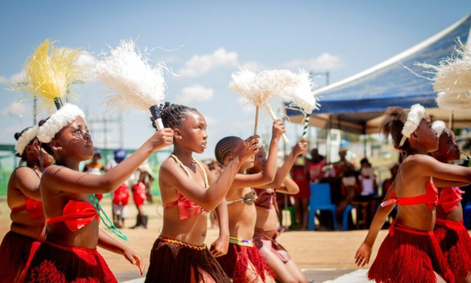

History of the Festival
The Morija Arts and Cultural Festival is one of the most important cultural events in Lesotho. It started in 1999 with the aim of promoting Basotho culture, heritage, and artistic creativity. The festival takes place every year in the historic town of Morija, which is known for its museums, mission history, and cultural heritage.
Morija has long been considered a centre of culture and education in Lesotho. Because of this rich history, the town became the perfect place to host a festival that celebrates Basotho traditions, music, literature, and visual arts.
Importance of the Festival
The festival plays an important role in preserving and promoting Basotho culture. It provides a platform for local artists, musicians, poets, writers, and craft makers to display their talents and share their work with the public.
Over the years, the Morija Arts and Cultural Festival has grown into a major tourism event in Lesotho. Visitors from different parts of the country and from other countries travel to Morija to experience Basotho culture, traditional music, storytelling, art exhibitions, and cultural performances.

Festival Activities
During the festival, visitors can enjoy a wide variety of activities. These include live music performances, poetry readings, storytelling sessions, traditional dance shows, art exhibitions, and craft markets. Visitors can also experience traditional Basotho food and cultural demonstrations.
These activities help preserve Basotho traditions while also allowing artists and performers to express their creativity and share their culture with visitors from around the world.

Festival Experience
Watch this video showing the Morija Arts and Cultural Festival, including traditional Basotho music, dance performances and cultural activities.
Target Tourists
The Morija Arts and Cultural Festival attracts different groups of tourists who are interested in culture, arts, and heritage tourism. These include:
- International tourists interested in African culture
- Local visitors and families
- Artists and musicians
- Art collectors
- Students and researchers studying culture and history
- Tourists interested in heritage tourism